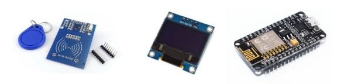
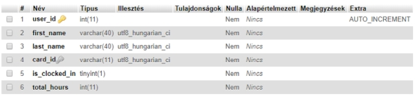
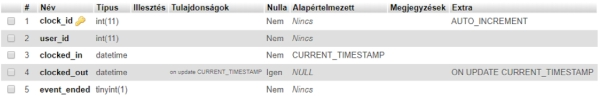
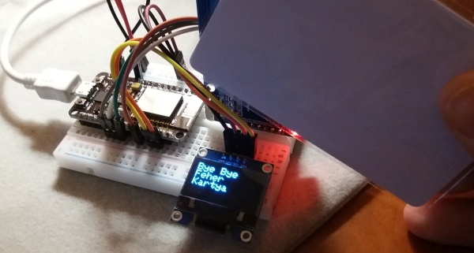

NodeMCU based clocking system
Introduction:
The main purpose of this system to count the working hours of the students / workers and count the sum of remaining working hours. Once the workers arrive, they touch the card to the RFID sensor, the system stores the time of arrival. After the shift they do it again and the departure time is also stored. On the website, every data is displayed.
Hardware:
This system is made by three main parts:
- RC522 RFID module (card reader)
- 0,96″ OLED (SSD1306) (display)
- ESP8266 NodeMCU WiFi Development Board (microcontroller)

Hardware components
Operation:
In this section I am going to describe the operation of this system. After the controller is powered on it enters the SETUP state to initialize and start services.
- Serial.begin(115200); (serial monitor for debug purposes)
- mfrc522.PCD_Init(); (RFID card reader)
- display.begin(SSD1306_SWITCHCAPVCC, 0x3C); (OLED display)
- WiFi.begin(ssid, pass); (WiFi connection to reach MySQL database)
If the SETUP state completed successfully the controller begins LOOP state and stays in it for good while the controller is powered on. It checks for cards in proximity constantly, if succeeded, the controller reads card ID and connects to MySQL database to look for a registered user who has a matching card ID. If exists, it retrieves user ID, first name, last name and the is_clocked_in flag.
- In case of worker doesn’t clocked in: An entry is created in database’s events table, storing user ID, clocked_in timestamp and event_ended flag with the value of 0. After these in users table the is_clocked_in flag changes to 1, so the worker is now clocked in, then user is welcomed on display.
- In case of worker already clocked in: User is going to be clocked out, so the is_clocked_in flag is set to 0. After the user is clocked out, we need to close the event, so event_ended flag goes to 1. Events table’s clocked_out field is configured to store current timestamp on update, so when event_ended was updated to 1, current time for clocking out was stored.

Users table

Events table

Testing
Github Link